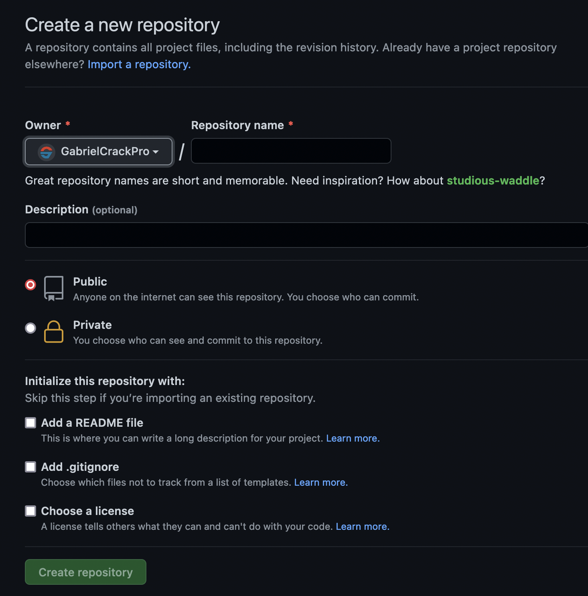

What's a repository?
A repository is a place where you can store your code.
Clasification
-
Public - Anyone can see and clone and
fork the repository.
-
Private - Only you can see and clone the
repository.
-
Template - A repository that is used to
create new repositories.
Creation
To create a new repository follow this steps:
-
Go to repositories in the top menu and click on the
button in the top right
-
This screen will appear

-
Name Just type the name of the
repository
-
Description Just type the description
of the repository
-
Visibility Select the visibility of the
repository (public or private)
-
Add README file Check this option if
you want to add a README.md file to the repository
This file can be used to explain the repository
-
Choose a license Check this option if
you want to select a license for the repository
The license determines the permissions of the repository
-
Click on the
button to finish the creation
-
Click here to go to comands
page